%matplotlib inline
from preamble import *Chapter 2 - Supervised Learning
Supervised Learning
Classification and Regression
Generalization, Overfitting, and Underfitting

Relation of Model Complexity to Dataset Size
Supervised Machine Learning Algorithms
Some Sample Datasets
# generate dataset
X, y = mglearn.datasets.make_forge()
# plot dataset
mglearn.discrete_scatter(X[:, 0], X[:, 1], y)
plt.legend(["Class 0", "Class 1"], loc=4)
plt.xlabel("First feature")
plt.ylabel("Second feature")
print("X.shape:", X.shape)X.shape: (26, 2)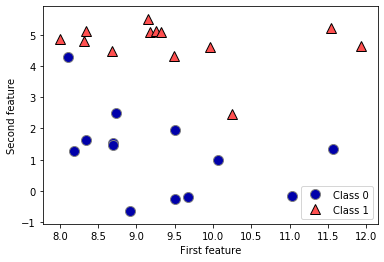
X, y = mglearn.datasets.make_wave(n_samples=40)
plt.plot(X, y, 'o')
plt.ylim(-3, 3)
plt.xlabel("Feature")
plt.ylabel("Target")Text(0, 0.5, 'Target')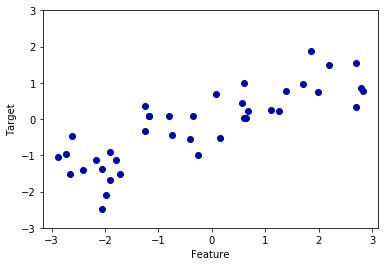
from sklearn.datasets import load_breast_cancer
cancer = load_breast_cancer()
print("cancer.keys():\n", cancer.keys())cancer.keys():
dict_keys(['data', 'target', 'frame', 'target_names', 'DESCR', 'feature_names', 'filename'])print("Shape of cancer data:", cancer.data.shape)Shape of cancer data: (569, 30)print("Sample counts per class:\n",
{n: v for n, v in zip(cancer.target_names, np.bincount(cancer.target))})Sample counts per class:
{'malignant': 212, 'benign': 357}print("Feature names:\n", cancer.feature_names)Feature names:
['mean radius' 'mean texture' 'mean perimeter' 'mean area'
'mean smoothness' 'mean compactness' 'mean concavity'
'mean concave points' 'mean symmetry' 'mean fractal dimension'
'radius error' 'texture error' 'perimeter error' 'area error'
'smoothness error' 'compactness error' 'concavity error'
'concave points error' 'symmetry error' 'fractal dimension error'
'worst radius' 'worst texture' 'worst perimeter' 'worst area'
'worst smoothness' 'worst compactness' 'worst concavity'
'worst concave points' 'worst symmetry' 'worst fractal dimension']from sklearn.datasets import load_boston
boston = load_boston()
print("Data shape:", boston.data.shape)Data shape: (506, 13)X, y = mglearn.datasets.load_extended_boston()
print("X.shape:", X.shape)X.shape: (506, 104)k-Nearest Neighbors
k-Neighbors classification
mglearn.plots.plot_knn_classification(n_neighbors=1)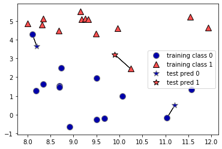
mglearn.plots.plot_knn_classification(n_neighbors=3)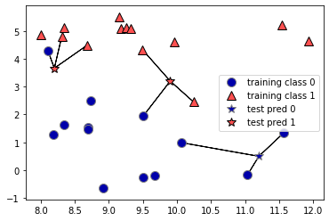
from sklearn.model_selection import train_test_split
X, y = mglearn.datasets.make_forge()
X_train, X_test, y_train, y_test = train_test_split(X, y, random_state=0)from sklearn.neighbors import KNeighborsClassifier
clf = KNeighborsClassifier(n_neighbors=3)clf.fit(X_train, y_train)KNeighborsClassifier(n_neighbors=3)print("Test set predictions:", clf.predict(X_test))Test set predictions: [1 0 1 0 1 0 0]print("Test set accuracy: {:.2f}".format(clf.score(X_test, y_test)))Test set accuracy: 0.86Analyzing KNeighborsClassifier
fig, axes = plt.subplots(1, 3, figsize=(10, 3))
for n_neighbors, ax in zip([1, 3, 9], axes):
# the fit method returns the object self, so we can instantiate
# and fit in one line
clf = KNeighborsClassifier(n_neighbors=n_neighbors).fit(X, y)
mglearn.plots.plot_2d_separator(clf, X, fill=True, eps=0.5, ax=ax, alpha=.4)
mglearn.discrete_scatter(X[:, 0], X[:, 1], y, ax=ax)
ax.set_title("{} neighbor(s)".format(n_neighbors))
ax.set_xlabel("feature 0")
ax.set_ylabel("feature 1")
axes[0].legend(loc=3)<matplotlib.legend.Legend at 0x1624b31b9c8>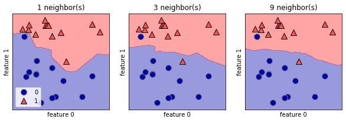
from sklearn.datasets import load_breast_cancer
cancer = load_breast_cancer()
X_train, X_test, y_train, y_test = train_test_split(
cancer.data, cancer.target, stratify=cancer.target, random_state=66)
training_accuracy = []
test_accuracy = []
# try n_neighbors from 1 to 10
neighbors_settings = range(1, 11)
for n_neighbors in neighbors_settings:
# build the model
clf = KNeighborsClassifier(n_neighbors=n_neighbors)
clf.fit(X_train, y_train)
# record training set accuracy
training_accuracy.append(clf.score(X_train, y_train))
# record generalization accuracy
test_accuracy.append(clf.score(X_test, y_test))
plt.plot(neighbors_settings, training_accuracy, label="training accuracy")
plt.plot(neighbors_settings, test_accuracy, label="test accuracy")
plt.ylabel("Accuracy")
plt.xlabel("n_neighbors")
plt.legend()<matplotlib.legend.Legend at 0x1624b31b508>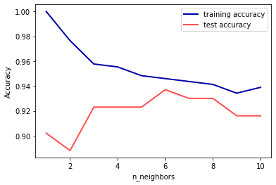
k-neighbors regression
mglearn.plots.plot_knn_regression(n_neighbors=1)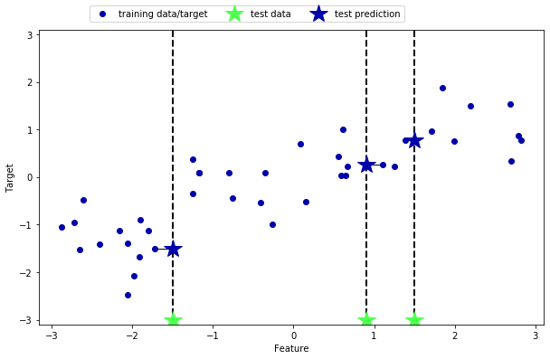
mglearn.plots.plot_knn_regression(n_neighbors=3)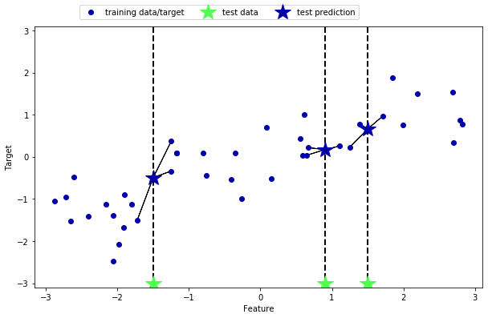
from sklearn.neighbors import KNeighborsRegressor
X, y = mglearn.datasets.make_wave(n_samples=40)
# split the wave dataset into a training and a test set
X_train, X_test, y_train, y_test = train_test_split(X, y, random_state=0)
# instantiate the model and set the number of neighbors to consider to 3
reg = KNeighborsRegressor(n_neighbors=3)
# fit the model using the training data and training targets
reg.fit(X_train, y_train)KNeighborsRegressor(n_neighbors=3)print("Test set predictions:\n", reg.predict(X_test))Test set predictions:
[-0.054 0.357 1.137 -1.894 -1.139 -1.631 0.357 0.912 -0.447 -1.139]print("Test set R^2: {:.2f}".format(reg.score(X_test, y_test)))Test set R^2: 0.83Analyzing KNeighborsRegressor
fig, axes = plt.subplots(1, 3, figsize=(15, 4))
# create 1,000 data points, evenly spaced between -3 and 3
line = np.linspace(-3, 3, 1000).reshape(-1, 1)
for n_neighbors, ax in zip([1, 3, 9], axes):
# make predictions using 1, 3, or 9 neighbors
reg = KNeighborsRegressor(n_neighbors=n_neighbors)
reg.fit(X_train, y_train)
ax.plot(line, reg.predict(line))
ax.plot(X_train, y_train, '^', c=mglearn.cm2(0), markersize=8)
ax.plot(X_test, y_test, 'v', c=mglearn.cm2(1), markersize=8)
ax.set_title(
"{} neighbor(s)\n train score: {:.2f} test score: {:.2f}".format(
n_neighbors, reg.score(X_train, y_train),
reg.score(X_test, y_test)))
ax.set_xlabel("Feature")
ax.set_ylabel("Target")
axes[0].legend(["Model predictions", "Training data/target",
"Test data/target"], loc="best")<matplotlib.legend.Legend at 0x1624af510c8>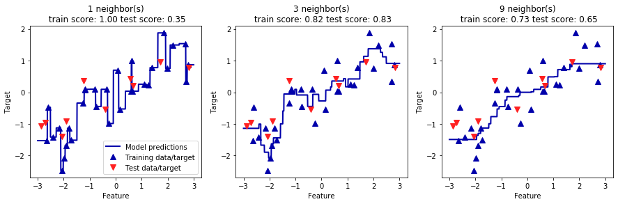
Strengths, weaknesses, and parameters
Linear Models
Linear models for regression
\[\begin{align*} \end{align*}\]
mglearn.plots.plot_linear_regression_wave()w[0]: 0.393906 b: -0.031804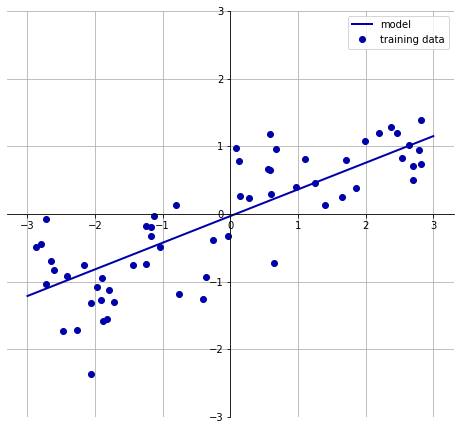
Linear regression aka ordinary least squares
from sklearn.linear_model import LinearRegression
X, y = mglearn.datasets.make_wave(n_samples=60)
X_train, X_test, y_train, y_test = train_test_split(X, y, random_state=42)
lr = LinearRegression().fit(X_train, y_train)print("lr.coef_:", lr.coef_)
print("lr.intercept_:", lr.intercept_)lr.coef_: [0.394]
lr.intercept_: -0.031804343026759746print("Training set score: {:.2f}".format(lr.score(X_train, y_train)))
print("Test set score: {:.2f}".format(lr.score(X_test, y_test)))Training set score: 0.67
Test set score: 0.66X, y = mglearn.datasets.load_extended_boston()
X_train, X_test, y_train, y_test = train_test_split(X, y, random_state=0)
lr = LinearRegression().fit(X_train, y_train)print("Training set score: {:.2f}".format(lr.score(X_train, y_train)))
print("Test set score: {:.2f}".format(lr.score(X_test, y_test)))Training set score: 0.95
Test set score: 0.61Ridge regression
from sklearn.linear_model import Ridge
ridge = Ridge().fit(X_train, y_train)
print("Training set score: {:.2f}".format(ridge.score(X_train, y_train)))
print("Test set score: {:.2f}".format(ridge.score(X_test, y_test)))Training set score: 0.89
Test set score: 0.75ridge10 = Ridge(alpha=10).fit(X_train, y_train)
print("Training set score: {:.2f}".format(ridge10.score(X_train, y_train)))
print("Test set score: {:.2f}".format(ridge10.score(X_test, y_test)))Training set score: 0.79
Test set score: 0.64ridge01 = Ridge(alpha=0.1).fit(X_train, y_train)
print("Training set score: {:.2f}".format(ridge01.score(X_train, y_train)))
print("Test set score: {:.2f}".format(ridge01.score(X_test, y_test)))Training set score: 0.93
Test set score: 0.77plt.plot(ridge.coef_, 's', label="Ridge alpha=1")
plt.plot(ridge10.coef_, '^', label="Ridge alpha=10")
plt.plot(ridge01.coef_, 'v', label="Ridge alpha=0.1")
plt.plot(lr.coef_, 'o', label="LinearRegression")
plt.xlabel("Coefficient index")
plt.ylabel("Coefficient magnitude")
xlims = plt.xlim()
plt.hlines(0, xlims[0], xlims[1])
plt.xlim(xlims)
plt.ylim(-25, 25)
plt.legend()<matplotlib.legend.Legend at 0x1624b506848>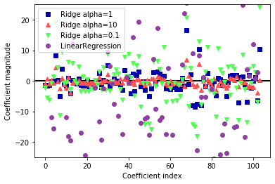
mglearn.plots.plot_ridge_n_samples()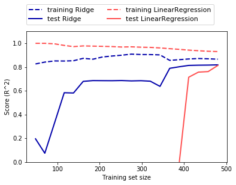
Lasso
from sklearn.linear_model import Lasso
lasso = Lasso().fit(X_train, y_train)
print("Training set score: {:.2f}".format(lasso.score(X_train, y_train)))
print("Test set score: {:.2f}".format(lasso.score(X_test, y_test)))
print("Number of features used:", np.sum(lasso.coef_ != 0))Training set score: 0.29
Test set score: 0.21
Number of features used: 4# we increase the default setting of "max_iter",
# otherwise the model would warn us that we should increase max_iter.
lasso001 = Lasso(alpha=0.01, max_iter=100000).fit(X_train, y_train)
print("Training set score: {:.2f}".format(lasso001.score(X_train, y_train)))
print("Test set score: {:.2f}".format(lasso001.score(X_test, y_test)))
print("Number of features used:", np.sum(lasso001.coef_ != 0))Training set score: 0.90
Test set score: 0.77
Number of features used: 33lasso00001 = Lasso(alpha=0.0001, max_iter=100000).fit(X_train, y_train)
print("Training set score: {:.2f}".format(lasso00001.score(X_train, y_train)))
print("Test set score: {:.2f}".format(lasso00001.score(X_test, y_test)))
print("Number of features used:", np.sum(lasso00001.coef_ != 0))Training set score: 0.95
Test set score: 0.64
Number of features used: 96plt.plot(lasso.coef_, 's', label="Lasso alpha=1")
plt.plot(lasso001.coef_, '^', label="Lasso alpha=0.01")
plt.plot(lasso00001.coef_, 'v', label="Lasso alpha=0.0001")
plt.plot(ridge01.coef_, 'o', label="Ridge alpha=0.1")
plt.legend(ncol=2, loc=(0, 1.05))
plt.ylim(-25, 25)
plt.xlabel("Coefficient index")
plt.ylabel("Coefficient magnitude")Text(0, 0.5, 'Coefficient magnitude')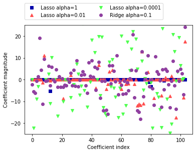
Linear models for classification
\[\begin{align*} \end{align*}\]
from sklearn.linear_model import LogisticRegression
from sklearn.svm import LinearSVC
X, y = mglearn.datasets.make_forge()
fig, axes = plt.subplots(1, 2, figsize=(10, 3))
for model, ax in zip([LinearSVC(), LogisticRegression()], axes):
clf = model.fit(X, y)
mglearn.plots.plot_2d_separator(clf, X, fill=False, eps=0.5,
ax=ax, alpha=.7)
mglearn.discrete_scatter(X[:, 0], X[:, 1], y, ax=ax)
ax.set_title(clf.__class__.__name__)
ax.set_xlabel("Feature 0")
ax.set_ylabel("Feature 1")
axes[0].legend()<matplotlib.legend.Legend at 0x1624c452188>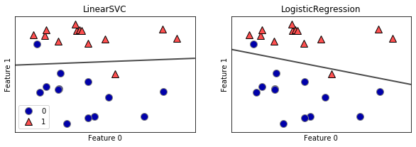
mglearn.plots.plot_linear_svc_regularization()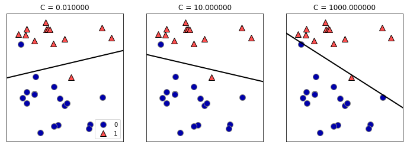
from sklearn.datasets import load_breast_cancer
cancer = load_breast_cancer()
X_train, X_test, y_train, y_test = train_test_split(
cancer.data, cancer.target, stratify=cancer.target, random_state=42)
logreg = LogisticRegression().fit(X_train, y_train)
print("Training set score: {:.3f}".format(logreg.score(X_train, y_train)))
print("Test set score: {:.3f}".format(logreg.score(X_test, y_test)))Training set score: 0.944
Test set score: 0.951logreg100 = LogisticRegression(C=100).fit(X_train, y_train)
print("Training set score: {:.3f}".format(logreg100.score(X_train, y_train)))
print("Test set score: {:.3f}".format(logreg100.score(X_test, y_test)))Training set score: 0.946
Test set score: 0.958logreg001 = LogisticRegression(C=0.01).fit(X_train, y_train)
print("Training set score: {:.3f}".format(logreg001.score(X_train, y_train)))
print("Test set score: {:.3f}".format(logreg001.score(X_test, y_test)))Training set score: 0.934
Test set score: 0.930plt.plot(logreg.coef_.T, 'o', label="C=1")
plt.plot(logreg100.coef_.T, '^', label="C=100")
plt.plot(logreg001.coef_.T, 'v', label="C=0.001")
plt.xticks(range(cancer.data.shape[1]), cancer.feature_names, rotation=90)
xlims = plt.xlim()
plt.hlines(0, xlims[0], xlims[1])
plt.xlim(xlims)
plt.ylim(-5, 5)
plt.xlabel("Feature")
plt.ylabel("Coefficient magnitude")
plt.legend()<matplotlib.legend.Legend at 0x1624af9f748>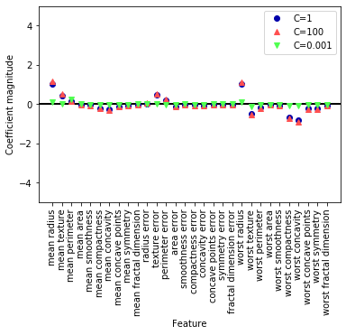
for C, marker in zip([0.001, 1, 100], ['o', '^', 'v']):
lr_l1 = LogisticRegression(C=C, solver='liblinear', penalty="l1").fit(X_train, y_train)
print("Training accuracy of l1 logreg with C={:.3f}: {:.2f}".format(
C, lr_l1.score(X_train, y_train)))
print("Test accuracy of l1 logreg with C={:.3f}: {:.2f}".format(
C, lr_l1.score(X_test, y_test)))
plt.plot(lr_l1.coef_.T, marker, label="C={:.3f}".format(C))
plt.xticks(range(cancer.data.shape[1]), cancer.feature_names, rotation=90)
xlims = plt.xlim()
plt.hlines(0, xlims[0], xlims[1])
plt.xlim(xlims)
plt.xlabel("Feature")
plt.ylabel("Coefficient magnitude")
plt.ylim(-5, 5)
plt.legend(loc=3)Training accuracy of l1 logreg with C=0.001: 0.91
Test accuracy of l1 logreg with C=0.001: 0.92
Training accuracy of l1 logreg with C=1.000: 0.96
Test accuracy of l1 logreg with C=1.000: 0.96
Training accuracy of l1 logreg with C=100.000: 0.99
Test accuracy of l1 logreg with C=100.000: 0.98<matplotlib.legend.Legend at 0x1624b45f7c8>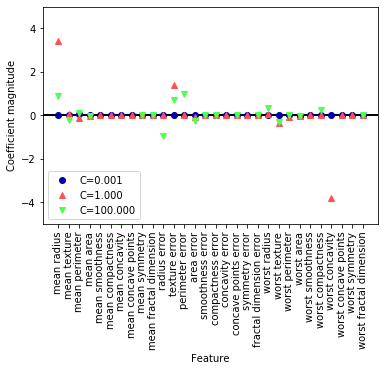
Linear models for multiclass classification
\[\begin{align*} \end{align*}\]
from sklearn.datasets import make_blobs
X, y = make_blobs(random_state=42)
mglearn.discrete_scatter(X[:, 0], X[:, 1], y)
plt.xlabel("Feature 0")
plt.ylabel("Feature 1")
plt.legend(["Class 0", "Class 1", "Class 2"])<matplotlib.legend.Legend at 0x1624c545308>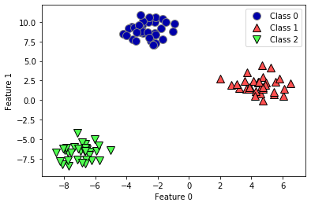
linear_svm = LinearSVC().fit(X, y)
print("Coefficient shape: ", linear_svm.coef_.shape)
print("Intercept shape: ", linear_svm.intercept_.shape)Coefficient shape: (3, 2)
Intercept shape: (3,)mglearn.discrete_scatter(X[:, 0], X[:, 1], y)
line = np.linspace(-15, 15)
for coef, intercept, color in zip(linear_svm.coef_, linear_svm.intercept_,
mglearn.cm3.colors):
plt.plot(line, -(line * coef[0] + intercept) / coef[1], c=color)
plt.ylim(-10, 15)
plt.xlim(-10, 8)
plt.xlabel("Feature 0")
plt.ylabel("Feature 1")
plt.legend(['Class 0', 'Class 1', 'Class 2', 'Line class 0', 'Line class 1',
'Line class 2'], loc=(1.01, 0.3))<matplotlib.legend.Legend at 0x1624c5e1788>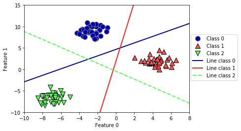
mglearn.plots.plot_2d_classification(linear_svm, X, fill=True, alpha=.7)
mglearn.discrete_scatter(X[:, 0], X[:, 1], y)
line = np.linspace(-15, 15)
for coef, intercept, color in zip(linear_svm.coef_, linear_svm.intercept_,
mglearn.cm3.colors):
plt.plot(line, -(line * coef[0] + intercept) / coef[1], c=color)
plt.legend(['Class 0', 'Class 1', 'Class 2', 'Line class 0', 'Line class 1',
'Line class 2'], loc=(1.01, 0.3))
plt.xlabel("Feature 0")
plt.ylabel("Feature 1")Text(0, 0.5, 'Feature 1')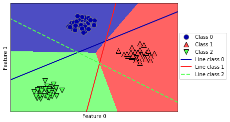
Strengths, weaknesses and parameters
# instantiate model and fit it in one line
logreg = LogisticRegression().fit(X_train, y_train)logreg = LogisticRegression()
y_pred = logreg.fit(X_train, y_train).predict(X_test)y_pred = LogisticRegression().fit(X_train, y_train).predict(X_test)Naive Bayes Classifiers
X = np.array([[0, 1, 0, 1],
[1, 0, 1, 1],
[0, 0, 0, 1],
[1, 0, 1, 0]])
y = np.array([0, 1, 0, 1])counts = {}
for label in np.unique(y):
# iterate over each class
# count (sum) entries of 1 per feature
counts[label] = X[y == label].sum(axis=0)
print("Feature counts:\n", counts)Feature counts:
{0: array([0, 1, 0, 2]), 1: array([2, 0, 2, 1])}Strengths, weaknesses and parameters
Decision trees
import sys
sys.path['C:\\Users\\t3kci\\checkout\\introduction_to_ml_with_python',
'C:\\Users\\t3kci\\anaconda3\\python37.zip',
'C:\\Users\\t3kci\\anaconda3\\DLLs',
'C:\\Users\\t3kci\\anaconda3\\lib',
'C:\\Users\\t3kci\\anaconda3',
'',
'C:\\Users\\t3kci\\anaconda3\\lib\\site-packages',
'c:\\users\\t3kci\\checkout\\scikit-learn',
'c:\\users\\t3kci\\checkout\\jupyter-book',
'C:\\Users\\t3kci\\anaconda3\\lib\\site-packages\\win32',
'C:\\Users\\t3kci\\anaconda3\\lib\\site-packages\\win32\\lib',
'C:\\Users\\t3kci\\anaconda3\\lib\\site-packages\\Pythonwin',
'C:\\Users\\t3kci\\anaconda3\\lib\\site-packages\\IPython\\extensions',
'C:\\Users\\t3kci\\.ipython']mglearn.plots.plot_animal_tree()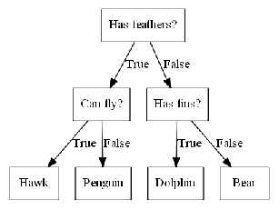
Building decision trees
mglearn.plots.plot_tree_progressive()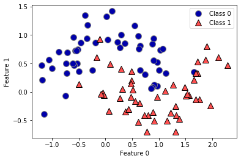
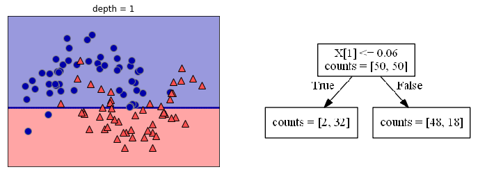
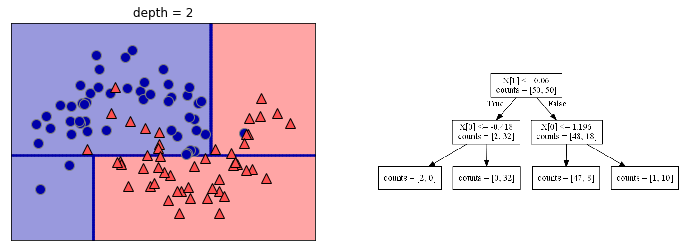
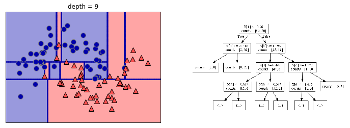
Controlling complexity of decision trees
from sklearn.tree import DecisionTreeClassifier
cancer = load_breast_cancer()
X_train, X_test, y_train, y_test = train_test_split(
cancer.data, cancer.target, stratify=cancer.target, random_state=42)
tree = DecisionTreeClassifier(random_state=0)
tree.fit(X_train, y_train)
print("Accuracy on training set: {:.3f}".format(tree.score(X_train, y_train)))
print("Accuracy on test set: {:.3f}".format(tree.score(X_test, y_test)))Accuracy on training set: 1.000
Accuracy on test set: 0.937tree = DecisionTreeClassifier(max_depth=4, random_state=0)
tree.fit(X_train, y_train)
print("Accuracy on training set: {:.3f}".format(tree.score(X_train, y_train)))
print("Accuracy on test set: {:.3f}".format(tree.score(X_test, y_test)))Accuracy on training set: 0.988
Accuracy on test set: 0.951Analyzing Decision Trees
from sklearn.tree import export_graphviz
export_graphviz(tree, out_file="tree.dot", class_names=["malignant", "benign"],
feature_names=cancer.feature_names, impurity=False, filled=True)import graphviz
with open("tree.dot") as f:
dot_graph = f.read()
display(graphviz.Source(dot_graph))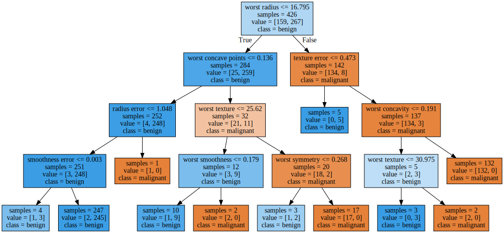
Feature Importance in trees
print("Feature importances:")
print(tree.feature_importances_)Feature importances:
[0. 0. 0. 0. 0. 0. 0. 0. 0. 0. 0.01 0.048
0. 0. 0.002 0. 0. 0. 0. 0. 0.727 0.046 0. 0.
0.014 0. 0.018 0.122 0.012 0. ]def plot_feature_importances_cancer(model):
n_features = cancer.data.shape[1]
plt.barh(np.arange(n_features), model.feature_importances_, align='center')
plt.yticks(np.arange(n_features), cancer.feature_names)
plt.xlabel("Feature importance")
plt.ylabel("Feature")
plt.ylim(-1, n_features)
plot_feature_importances_cancer(tree)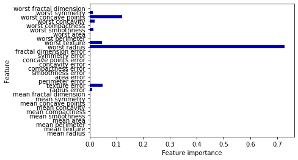
tree = mglearn.plots.plot_tree_not_monotone()
display(tree)Feature importances: [0. 1.]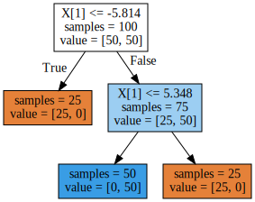
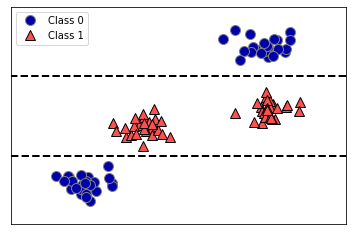
import os
ram_prices = pd.read_csv(os.path.join(mglearn.datasets.DATA_PATH, "ram_price.csv"))
plt.semilogy(ram_prices.date, ram_prices.price)
plt.xlabel("Year")
plt.ylabel("Price in $/Mbyte")Text(0, 0.5, 'Price in $/Mbyte')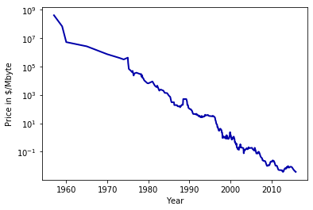
from sklearn.tree import DecisionTreeRegressor
# use historical data to forecast prices after the year 2000
data_train = ram_prices[ram_prices.date < 2000]
data_test = ram_prices[ram_prices.date >= 2000]
# predict prices based on date
X_train = data_train.date[:, np.newaxis]
# we use a log-transform to get a simpler relationship of data to target
y_train = np.log(data_train.price)
tree = DecisionTreeRegressor(max_depth=3).fit(X_train, y_train)
linear_reg = LinearRegression().fit(X_train, y_train)
# predict on all data
X_all = ram_prices.date[:, np.newaxis]
pred_tree = tree.predict(X_all)
pred_lr = linear_reg.predict(X_all)
# undo log-transform
price_tree = np.exp(pred_tree)
price_lr = np.exp(pred_lr)plt.semilogy(data_train.date, data_train.price, label="Training data")
plt.semilogy(data_test.date, data_test.price, label="Test data")
plt.semilogy(ram_prices.date, price_tree, label="Tree prediction")
plt.semilogy(ram_prices.date, price_lr, label="Linear prediction")
plt.legend()<matplotlib.legend.Legend at 0x1624b51f088>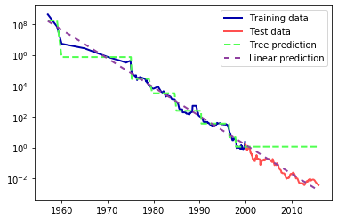
Strengths, weaknesses and parameters
Ensembles of Decision Trees
Random forests
Building random forests
Analyzing random forests
from sklearn.ensemble import RandomForestClassifier
from sklearn.datasets import make_moons
X, y = make_moons(n_samples=100, noise=0.25, random_state=3)
X_train, X_test, y_train, y_test = train_test_split(X, y, stratify=y,
random_state=42)
forest = RandomForestClassifier(n_estimators=5, random_state=2)
forest.fit(X_train, y_train)RandomForestClassifier(n_estimators=5, random_state=2)fig, axes = plt.subplots(2, 3, figsize=(20, 10))
for i, (ax, tree) in enumerate(zip(axes.ravel(), forest.estimators_)):
ax.set_title("Tree {}".format(i))
mglearn.plots.plot_tree_partition(X_train, y_train, tree, ax=ax)
mglearn.plots.plot_2d_separator(forest, X_train, fill=True, ax=axes[-1, -1],
alpha=.4)
axes[-1, -1].set_title("Random Forest")
mglearn.discrete_scatter(X_train[:, 0], X_train[:, 1], y_train)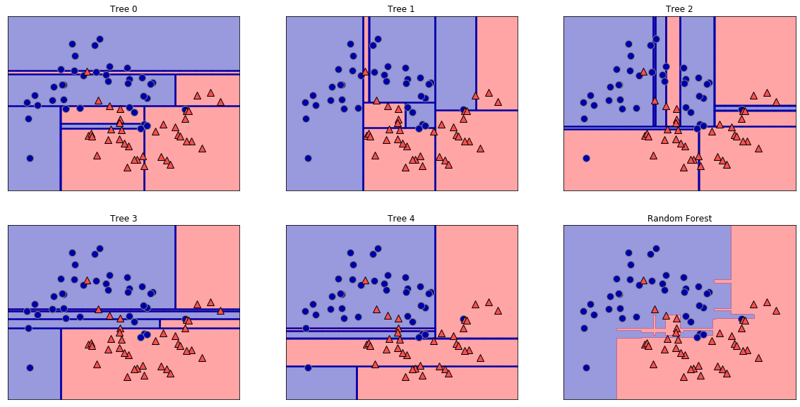
X_train, X_test, y_train, y_test = train_test_split(
cancer.data, cancer.target, random_state=0)
forest = RandomForestClassifier(n_estimators=100, random_state=0)
forest.fit(X_train, y_train)
print("Accuracy on training set: {:.3f}".format(forest.score(X_train, y_train)))
print("Accuracy on test set: {:.3f}".format(forest.score(X_test, y_test)))Accuracy on training set: 1.000
Accuracy on test set: 0.972plot_feature_importances_cancer(forest)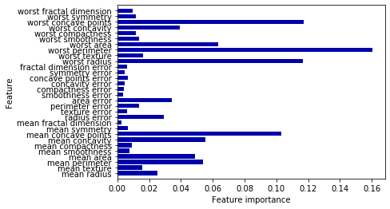
Strengths, weaknesses, and parameters
Gradient Boosted Regression Trees (Gradient Boosting Machines)
from sklearn.ensemble import GradientBoostingClassifier
X_train, X_test, y_train, y_test = train_test_split(
cancer.data, cancer.target, random_state=0)
gbrt = GradientBoostingClassifier(random_state=0)
gbrt.fit(X_train, y_train)
print("Accuracy on training set: {:.3f}".format(gbrt.score(X_train, y_train)))
print("Accuracy on test set: {:.3f}".format(gbrt.score(X_test, y_test)))Accuracy on training set: 1.000
Accuracy on test set: 0.965gbrt = GradientBoostingClassifier(random_state=0, max_depth=1)
gbrt.fit(X_train, y_train)
print("Accuracy on training set: {:.3f}".format(gbrt.score(X_train, y_train)))
print("Accuracy on test set: {:.3f}".format(gbrt.score(X_test, y_test)))Accuracy on training set: 0.991
Accuracy on test set: 0.972gbrt = GradientBoostingClassifier(random_state=0, learning_rate=0.01)
gbrt.fit(X_train, y_train)
print("Accuracy on training set: {:.3f}".format(gbrt.score(X_train, y_train)))
print("Accuracy on test set: {:.3f}".format(gbrt.score(X_test, y_test)))Accuracy on training set: 0.988
Accuracy on test set: 0.965gbrt = GradientBoostingClassifier(random_state=0, max_depth=1)
gbrt.fit(X_train, y_train)
plot_feature_importances_cancer(gbrt)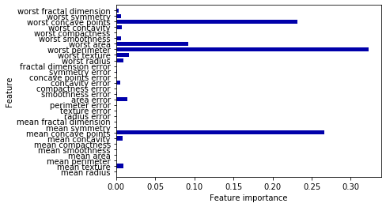
Strengths, weaknesses and parameters
Kernelized Support Vector Machines
Linear Models and Non-linear Features
X, y = make_blobs(centers=4, random_state=8)
y = y % 2
mglearn.discrete_scatter(X[:, 0], X[:, 1], y)
plt.xlabel("Feature 0")
plt.ylabel("Feature 1")Text(0, 0.5, 'Feature 1')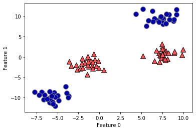
from sklearn.svm import LinearSVC
linear_svm = LinearSVC().fit(X, y)
mglearn.plots.plot_2d_separator(linear_svm, X)
mglearn.discrete_scatter(X[:, 0], X[:, 1], y)
plt.xlabel("Feature 0")
plt.ylabel("Feature 1")Text(0, 0.5, 'Feature 1')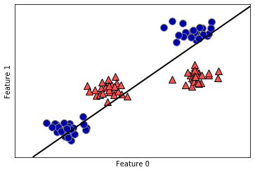
# add the squared first feature
X_new = np.hstack([X, X[:, 1:] ** 2])
from mpl_toolkits.mplot3d import Axes3D, axes3d
figure = plt.figure()
# visualize in 3D
ax = Axes3D(figure, elev=-152, azim=-26)
# plot first all the points with y==0, then all with y == 1
mask = y == 0
ax.scatter(X_new[mask, 0], X_new[mask, 1], X_new[mask, 2], c='b',
cmap=mglearn.cm2, s=60, edgecolor='k')
ax.scatter(X_new[~mask, 0], X_new[~mask, 1], X_new[~mask, 2], c='r', marker='^',
cmap=mglearn.cm2, s=60, edgecolor='k')
ax.set_xlabel("feature0")
ax.set_ylabel("feature1")
ax.set_zlabel("feature1 ** 2")Text(0.5, 0, 'feature1 ** 2')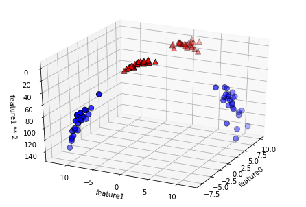
linear_svm_3d = LinearSVC().fit(X_new, y)
coef, intercept = linear_svm_3d.coef_.ravel(), linear_svm_3d.intercept_
# show linear decision boundary
figure = plt.figure()
ax = Axes3D(figure, elev=-152, azim=-26)
xx = np.linspace(X_new[:, 0].min() - 2, X_new[:, 0].max() + 2, 50)
yy = np.linspace(X_new[:, 1].min() - 2, X_new[:, 1].max() + 2, 50)
XX, YY = np.meshgrid(xx, yy)
ZZ = (coef[0] * XX + coef[1] * YY + intercept) / -coef[2]
ax.plot_surface(XX, YY, ZZ, rstride=8, cstride=8, alpha=0.3)
ax.scatter(X_new[mask, 0], X_new[mask, 1], X_new[mask, 2], c='b',
cmap=mglearn.cm2, s=60, edgecolor='k')
ax.scatter(X_new[~mask, 0], X_new[~mask, 1], X_new[~mask, 2], c='r', marker='^',
cmap=mglearn.cm2, s=60, edgecolor='k')
ax.set_xlabel("feature0")
ax.set_ylabel("feature1")
ax.set_zlabel("feature1 ** 2")Text(0.5, 0, 'feature1 ** 2')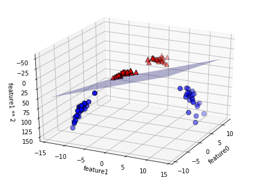
ZZ = YY ** 2
dec = linear_svm_3d.decision_function(np.c_[XX.ravel(), YY.ravel(), ZZ.ravel()])
plt.contourf(XX, YY, dec.reshape(XX.shape), levels=[dec.min(), 0, dec.max()],
cmap=mglearn.cm2, alpha=0.5)
mglearn.discrete_scatter(X[:, 0], X[:, 1], y)
plt.xlabel("Feature 0")
plt.ylabel("Feature 1")Text(0, 0.5, 'Feature 1')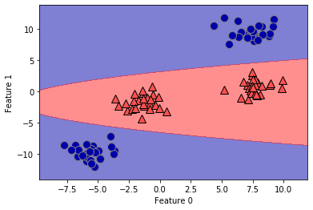
The Kernel Trick
Understanding SVMs
\[\begin{align*} \end{align*}\]
from sklearn.svm import SVC
X, y = mglearn.tools.make_handcrafted_dataset()
svm = SVC(kernel='rbf', C=10, gamma=0.1).fit(X, y)
mglearn.plots.plot_2d_separator(svm, X, eps=.5)
mglearn.discrete_scatter(X[:, 0], X[:, 1], y)
# plot support vectors
sv = svm.support_vectors_
# class labels of support vectors are given by the sign of the dual coefficients
sv_labels = svm.dual_coef_.ravel() > 0
mglearn.discrete_scatter(sv[:, 0], sv[:, 1], sv_labels, s=15, markeredgewidth=3)
plt.xlabel("Feature 0")
plt.ylabel("Feature 1")Text(0, 0.5, 'Feature 1')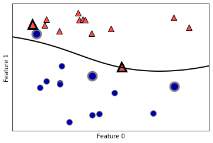
Tuning SVM parameters
fig, axes = plt.subplots(3, 3, figsize=(15, 10))
for ax, C in zip(axes, [-1, 0, 3]):
for a, gamma in zip(ax, range(-1, 2)):
mglearn.plots.plot_svm(log_C=C, log_gamma=gamma, ax=a)
axes[0, 0].legend(["class 0", "class 1", "sv class 0", "sv class 1"],
ncol=4, loc=(.9, 1.2))<matplotlib.legend.Legend at 0x1625391fb08>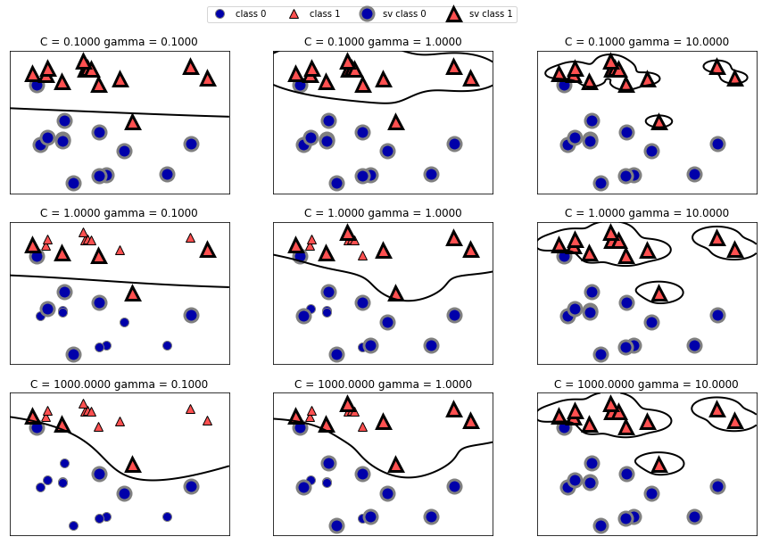
X_train, X_test, y_train, y_test = train_test_split(
cancer.data, cancer.target, random_state=0)
svc = SVC()
svc.fit(X_train, y_train)
print("Accuracy on training set: {:.2f}".format(svc.score(X_train, y_train)))
print("Accuracy on test set: {:.2f}".format(svc.score(X_test, y_test)))Accuracy on training set: 0.90
Accuracy on test set: 0.94plt.boxplot(X_train, manage_ticks=False)
plt.yscale("symlog")
plt.xlabel("Feature index")
plt.ylabel("Feature magnitude")Text(0, 0.5, 'Feature magnitude')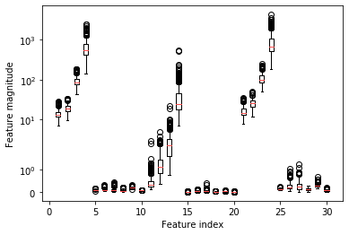
Preprocessing data for SVMs
# Compute the minimum value per feature on the training set
min_on_training = X_train.min(axis=0)
# Compute the range of each feature (max - min) on the training set
range_on_training = (X_train - min_on_training).max(axis=0)
# subtract the min, divide by range
# afterward, min=0 and max=1 for each feature
X_train_scaled = (X_train - min_on_training) / range_on_training
print("Minimum for each feature\n", X_train_scaled.min(axis=0))
print("Maximum for each feature\n", X_train_scaled.max(axis=0))Minimum for each feature
[0. 0. 0. 0. 0. 0. 0. 0. 0. 0. 0. 0. 0. 0. 0. 0. 0. 0. 0. 0. 0. 0. 0. 0.
0. 0. 0. 0. 0. 0.]
Maximum for each feature
[1. 1. 1. 1. 1. 1. 1. 1. 1. 1. 1. 1. 1. 1. 1. 1. 1. 1. 1. 1. 1. 1. 1. 1.
1. 1. 1. 1. 1. 1.]# use THE SAME transformation on the test set,
# using min and range of the training set. See Chapter 3 (unsupervised learning) for details.
X_test_scaled = (X_test - min_on_training) / range_on_trainingsvc = SVC()
svc.fit(X_train_scaled, y_train)
print("Accuracy on training set: {:.3f}".format(
svc.score(X_train_scaled, y_train)))
print("Accuracy on test set: {:.3f}".format(svc.score(X_test_scaled, y_test)))Accuracy on training set: 0.984
Accuracy on test set: 0.972svc = SVC(C=1000)
svc.fit(X_train_scaled, y_train)
print("Accuracy on training set: {:.3f}".format(
svc.score(X_train_scaled, y_train)))
print("Accuracy on test set: {:.3f}".format(svc.score(X_test_scaled, y_test)))Accuracy on training set: 1.000
Accuracy on test set: 0.958Strengths, weaknesses and parameters
Neural Networks (Deep Learning)
The Neural Network Model
display(mglearn.plots.plot_logistic_regression_graph())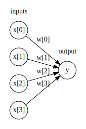
display(mglearn.plots.plot_single_hidden_layer_graph())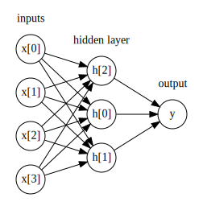
line = np.linspace(-3, 3, 100)
plt.plot(line, np.tanh(line), label="tanh")
plt.plot(line, np.maximum(line, 0), label="relu")
plt.legend(loc="best")
plt.xlabel("x")
plt.ylabel("relu(x), tanh(x)")Text(0, 0.5, 'relu(x), tanh(x)')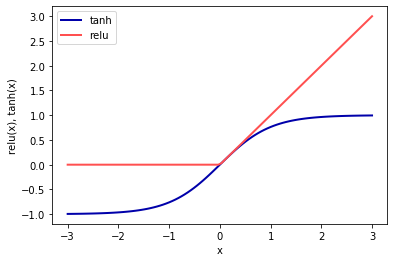
mglearn.plots.plot_two_hidden_layer_graph()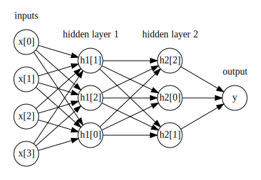
Tuning Neural Networks
from sklearn.neural_network import MLPClassifier
from sklearn.datasets import make_moons
X, y = make_moons(n_samples=100, noise=0.25, random_state=3)
X_train, X_test, y_train, y_test = train_test_split(X, y, stratify=y,
random_state=42)
mlp = MLPClassifier(solver='lbfgs', random_state=0).fit(X_train, y_train)
mglearn.plots.plot_2d_separator(mlp, X_train, fill=True, alpha=.3)
mglearn.discrete_scatter(X_train[:, 0], X_train[:, 1], y_train)
plt.xlabel("Feature 0")
plt.ylabel("Feature 1")Text(0, 0.5, 'Feature 1')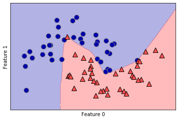
mlp = MLPClassifier(solver='lbfgs', random_state=0, hidden_layer_sizes=[10])
mlp.fit(X_train, y_train)
mglearn.plots.plot_2d_separator(mlp, X_train, fill=True, alpha=.3)
mglearn.discrete_scatter(X_train[:, 0], X_train[:, 1], y_train)
plt.xlabel("Feature 0")
plt.ylabel("Feature 1")Text(0, 0.5, 'Feature 1')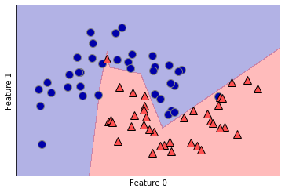
# using two hidden layers, with 10 units each
mlp = MLPClassifier(solver='lbfgs', random_state=0,
hidden_layer_sizes=[10, 10])
mlp.fit(X_train, y_train)
mglearn.plots.plot_2d_separator(mlp, X_train, fill=True, alpha=.3)
mglearn.discrete_scatter(X_train[:, 0], X_train[:, 1], y_train)
plt.xlabel("Feature 0")
plt.ylabel("Feature 1")Text(0, 0.5, 'Feature 1')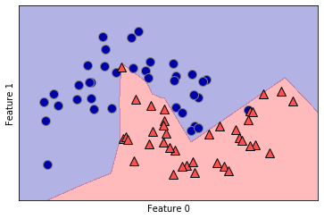
# using two hidden layers, with 10 units each, now with tanh nonlinearity.
mlp = MLPClassifier(solver='lbfgs', activation='tanh',
random_state=0, hidden_layer_sizes=[10, 10])
mlp.fit(X_train, y_train)
mglearn.plots.plot_2d_separator(mlp, X_train, fill=True, alpha=.3)
mglearn.discrete_scatter(X_train[:, 0], X_train[:, 1], y_train)
plt.xlabel("Feature 0")
plt.ylabel("Feature 1")Text(0, 0.5, 'Feature 1')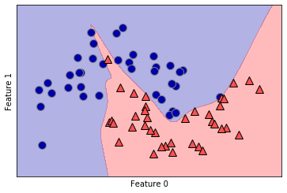
fig, axes = plt.subplots(2, 4, figsize=(20, 8))
for axx, n_hidden_nodes in zip(axes, [10, 100]):
for ax, alpha in zip(axx, [0.0001, 0.01, 0.1, 1]):
mlp = MLPClassifier(solver='lbfgs', random_state=0,
hidden_layer_sizes=[n_hidden_nodes, n_hidden_nodes],
alpha=alpha)
mlp.fit(X_train, y_train)
mglearn.plots.plot_2d_separator(mlp, X_train, fill=True, alpha=.3, ax=ax)
mglearn.discrete_scatter(X_train[:, 0], X_train[:, 1], y_train, ax=ax)
ax.set_title("n_hidden=[{}, {}]\nalpha={:.4f}".format(
n_hidden_nodes, n_hidden_nodes, alpha))fig, axes = plt.subplots(2, 4, figsize=(20, 8))
for i, ax in enumerate(axes.ravel()):
mlp = MLPClassifier(solver='lbfgs', random_state=i,
hidden_layer_sizes=[100, 100])
mlp.fit(X_train, y_train)
mglearn.plots.plot_2d_separator(mlp, X_train, fill=True, alpha=.3, ax=ax)
mglearn.discrete_scatter(X_train[:, 0], X_train[:, 1], y_train, ax=ax)print("Cancer data per-feature maxima:\n{}".format(cancer.data.max(axis=0)))Cancer data per-feature maxima:
[ 28.11 39.28 188.5 2501. 0.163 0.345 0.427 0.201
0.304 0.097 2.873 4.885 21.98 542.2 0.031 0.135
0.396 0.053 0.079 0.03 36.04 49.54 251.2 4254.
0.223 1.058 1.252 0.291 0.664 0.207]X_train, X_test, y_train, y_test = train_test_split(
cancer.data, cancer.target, random_state=0)
mlp = MLPClassifier(random_state=42)
mlp.fit(X_train, y_train)
print("Accuracy on training set: {:.2f}".format(mlp.score(X_train, y_train)))
print("Accuracy on test set: {:.2f}".format(mlp.score(X_test, y_test)))Accuracy on training set: 0.94
Accuracy on test set: 0.92# compute the mean value per feature on the training set
mean_on_train = X_train.mean(axis=0)
# compute the standard deviation of each feature on the training set
std_on_train = X_train.std(axis=0)
# subtract the mean, and scale by inverse standard deviation
# afterward, mean=0 and std=1
X_train_scaled = (X_train - mean_on_train) / std_on_train
# use THE SAME transformation (using training mean and std) on the test set
X_test_scaled = (X_test - mean_on_train) / std_on_train
mlp = MLPClassifier(random_state=0)
mlp.fit(X_train_scaled, y_train)
print("Accuracy on training set: {:.3f}".format(
mlp.score(X_train_scaled, y_train)))
print("Accuracy on test set: {:.3f}".format(mlp.score(X_test_scaled, y_test)))Accuracy on training set: 0.991
Accuracy on test set: 0.965mlp = MLPClassifier(max_iter=1000, random_state=0)
mlp.fit(X_train_scaled, y_train)
print("Accuracy on training set: {:.3f}".format(
mlp.score(X_train_scaled, y_train)))
print("Accuracy on test set: {:.3f}".format(mlp.score(X_test_scaled, y_test)))Accuracy on training set: 1.000
Accuracy on test set: 0.972mlp = MLPClassifier(max_iter=1000, alpha=1, random_state=0)
mlp.fit(X_train_scaled, y_train)
print("Accuracy on training set: {:.3f}".format(
mlp.score(X_train_scaled, y_train)))
print("Accuracy on test set: {:.3f}".format(mlp.score(X_test_scaled, y_test)))Accuracy on training set: 0.988
Accuracy on test set: 0.972plt.figure(figsize=(20, 5))
plt.imshow(mlp.coefs_[0], interpolation='none', cmap='viridis')
plt.yticks(range(30), cancer.feature_names)
plt.xlabel("Columns in weight matrix")
plt.ylabel("Input feature")
plt.colorbar()<matplotlib.colorbar.Colorbar at 0x16257289f08>Strengths, weaknesses and parameters
Estimating complexity in neural networks
Uncertainty estimates from classifiers
from sklearn.ensemble import GradientBoostingClassifier
from sklearn.datasets import make_circles
X, y = make_circles(noise=0.25, factor=0.5, random_state=1)
# we rename the classes "blue" and "red" for illustration purposes:
y_named = np.array(["blue", "red"])[y]
# we can call train_test_split with arbitrarily many arrays;
# all will be split in a consistent manner
X_train, X_test, y_train_named, y_test_named, y_train, y_test = \
train_test_split(X, y_named, y, random_state=0)
# build the gradient boosting model
gbrt = GradientBoostingClassifier(random_state=0)
gbrt.fit(X_train, y_train_named)GradientBoostingClassifier(random_state=0)The Decision Function
print("X_test.shape:", X_test.shape)
print("Decision function shape:",
gbrt.decision_function(X_test).shape)X_test.shape: (25, 2)
Decision function shape: (25,)# show the first few entries of decision_function
print("Decision function:", gbrt.decision_function(X_test)[:6])Decision function: [ 4.136 -1.702 -3.951 -3.626 4.29 3.662]print("Thresholded decision function:\n",
gbrt.decision_function(X_test) > 0)
print("Predictions:\n", gbrt.predict(X_test))Thresholded decision function:
[ True False False False True True False True True True False True
True False True False False False True True True True True False
False]
Predictions:
['red' 'blue' 'blue' 'blue' 'red' 'red' 'blue' 'red' 'red' 'red' 'blue'
'red' 'red' 'blue' 'red' 'blue' 'blue' 'blue' 'red' 'red' 'red' 'red'
'red' 'blue' 'blue']# make the boolean True/False into 0 and 1
greater_zero = (gbrt.decision_function(X_test) > 0).astype(int)
# use 0 and 1 as indices into classes_
pred = gbrt.classes_[greater_zero]
# pred is the same as the output of gbrt.predict
print("pred is equal to predictions:",
np.all(pred == gbrt.predict(X_test)))pred is equal to predictions: Truedecision_function = gbrt.decision_function(X_test)
print("Decision function minimum: {:.2f} maximum: {:.2f}".format(
np.min(decision_function), np.max(decision_function)))Decision function minimum: -7.69 maximum: 4.29fig, axes = plt.subplots(1, 2, figsize=(13, 5))
mglearn.tools.plot_2d_separator(gbrt, X, ax=axes[0], alpha=.4,
fill=True, cm=mglearn.cm2)
scores_image = mglearn.tools.plot_2d_scores(gbrt, X, ax=axes[1],
alpha=.4, cm=mglearn.ReBl)
for ax in axes:
# plot training and test points
mglearn.discrete_scatter(X_test[:, 0], X_test[:, 1], y_test,
markers='^', ax=ax)
mglearn.discrete_scatter(X_train[:, 0], X_train[:, 1], y_train,
markers='o', ax=ax)
ax.set_xlabel("Feature 0")
ax.set_ylabel("Feature 1")
cbar = plt.colorbar(scores_image, ax=axes.tolist())
cbar.set_alpha(1)
cbar.draw_all()
axes[0].legend(["Test class 0", "Test class 1", "Train class 0",
"Train class 1"], ncol=4, loc=(.1, 1.1))<matplotlib.legend.Legend at 0x162571efd08>Predicting Probabilities
print("Shape of probabilities:", gbrt.predict_proba(X_test).shape)Shape of probabilities: (25, 2)# show the first few entries of predict_proba
print("Predicted probabilities:")
print(gbrt.predict_proba(X_test[:6]))Predicted probabilities:
[[0.016 0.984]
[0.846 0.154]
[0.981 0.019]
[0.974 0.026]
[0.014 0.986]
[0.025 0.975]]fig, axes = plt.subplots(1, 2, figsize=(13, 5))
mglearn.tools.plot_2d_separator(
gbrt, X, ax=axes[0], alpha=.4, fill=True, cm=mglearn.cm2)
scores_image = mglearn.tools.plot_2d_scores(
gbrt, X, ax=axes[1], alpha=.5, cm=mglearn.ReBl, function='predict_proba')
for ax in axes:
# plot training and test points
mglearn.discrete_scatter(X_test[:, 0], X_test[:, 1], y_test,
markers='^', ax=ax)
mglearn.discrete_scatter(X_train[:, 0], X_train[:, 1], y_train,
markers='o', ax=ax)
ax.set_xlabel("Feature 0")
ax.set_ylabel("Feature 1")
# don't want a transparent colorbar
cbar = plt.colorbar(scores_image, ax=axes.tolist())
cbar.set_alpha(1)
cbar.draw_all()
axes[0].legend(["Test class 0", "Test class 1", "Train class 0",
"Train class 1"], ncol=4, loc=(.1, 1.1))<matplotlib.legend.Legend at 0x16257c4e048>Uncertainty in multiclass classification
from sklearn.datasets import load_iris
iris = load_iris()
X_train, X_test, y_train, y_test = train_test_split(
iris.data, iris.target, random_state=42)
gbrt = GradientBoostingClassifier(learning_rate=0.01, random_state=0)
gbrt.fit(X_train, y_train)GradientBoostingClassifier(learning_rate=0.01, random_state=0)print("Decision function shape:", gbrt.decision_function(X_test).shape)
# plot the first few entries of the decision function
print("Decision function:")
print(gbrt.decision_function(X_test)[:6, :])Decision function shape: (38, 3)
Decision function:
[[-1.996 0.048 -1.927]
[ 0.061 -1.908 -1.928]
[-1.991 -1.876 0.097]
[-1.996 0.048 -1.927]
[-1.997 -0.135 -1.203]
[ 0.061 -1.908 -1.928]]print("Argmax of decision function:")
print(np.argmax(gbrt.decision_function(X_test), axis=1))
print("Predictions:")
print(gbrt.predict(X_test))Argmax of decision function:
[1 0 2 1 1 0 1 2 1 1 2 0 0 0 0 1 2 1 1 2 0 2 0 2 2 2 2 2 0 0 0 0 1 0 0 2 1
0]
Predictions:
[1 0 2 1 1 0 1 2 1 1 2 0 0 0 0 1 2 1 1 2 0 2 0 2 2 2 2 2 0 0 0 0 1 0 0 2 1
0]# show the first few entries of predict_proba
print("Predicted probabilities:")
print(gbrt.predict_proba(X_test)[:6])
# show that sums across rows are one
print("Sums:", gbrt.predict_proba(X_test)[:6].sum(axis=1))Predicted probabilities:
[[0.102 0.788 0.109]
[0.783 0.109 0.107]
[0.098 0.11 0.792]
[0.102 0.788 0.109]
[0.104 0.667 0.229]
[0.783 0.109 0.107]]
Sums: [1. 1. 1. 1. 1. 1.]print("Argmax of predicted probabilities:")
print(np.argmax(gbrt.predict_proba(X_test), axis=1))
print("Predictions:")
print(gbrt.predict(X_test))Argmax of predicted probabilities:
[1 0 2 1 1 0 1 2 1 1 2 0 0 0 0 1 2 1 1 2 0 2 0 2 2 2 2 2 0 0 0 0 1 0 0 2 1
0]
Predictions:
[1 0 2 1 1 0 1 2 1 1 2 0 0 0 0 1 2 1 1 2 0 2 0 2 2 2 2 2 0 0 0 0 1 0 0 2 1
0]logreg = LogisticRegression()
# represent each target by its class name in the iris dataset
named_target = iris.target_names[y_train]
logreg.fit(X_train, named_target)
print("unique classes in training data:", logreg.classes_)
print("predictions:", logreg.predict(X_test)[:10])
argmax_dec_func = np.argmax(logreg.decision_function(X_test), axis=1)
print("argmax of decision function:", argmax_dec_func[:10])
print("argmax combined with classes_:",
logreg.classes_[argmax_dec_func][:10])unique classes in training data: ['setosa' 'versicolor' 'virginica']
predictions: ['versicolor' 'setosa' 'virginica' 'versicolor' 'versicolor' 'setosa'
'versicolor' 'virginica' 'versicolor' 'versicolor']
argmax of decision function: [1 0 2 1 1 0 1 2 1 1]
argmax combined with classes_: ['versicolor' 'setosa' 'virginica' 'versicolor' 'versicolor' 'setosa'
'versicolor' 'virginica' 'versicolor' 'versicolor']